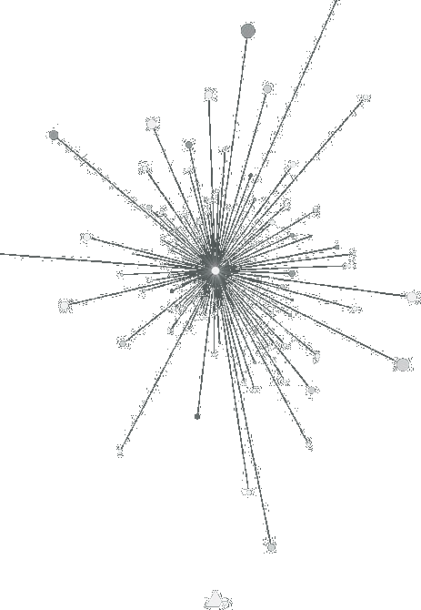

Idylls
Love Spirals Downwards
1992 • 13 songs • 49:21
Genres: Ethereal Wave, Dream Pop
Neoclassical Darkwave, Gothic Rock, Darkwave
Although this album owes its inspiration to Cocteau Twins, it is sparser and more gothic.
Idylls is cold, hypnotic, dark and nocturnal.

I love the sparse instrumentation
Even more hypnotic and heavenly...